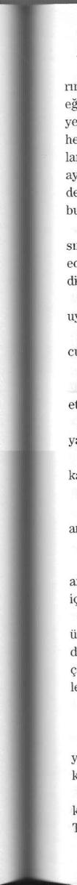

sı suskundu, düşüncelerine gömülmüştü, karısının sinirli sorularını duymuyordu bile.
- Baba, lütfen, sizin gitmenizi istiyorum, diyerek üsteliyordu Alfred Tannenberg.
- Gideceğiz, oğlum, gideceğiz, fakat Almanya'dan çok uzağa gitmek istemiyorum. Savaşı kaybetsek bile, burası bizim vatanımız.
- Baba, vaktimiz yok...
- Peki, öyleyse hazırlanalım.
Ne Franz ne de Heinrich anne ve babalarını ikna etmekte zorlandı, sınırı geçip İsviçre'ye yerleşmeye hazırlardı, oradan olayları izleyeceklerdi. Uzun bir süredir, hepsinin paraları İsviçre bankalarındaydı, iyi gelir getiriyordu; komşu ülkede yaşamak hiçbiri için sorun olmayacaktı.
Georg, olağanüstü örgütleme yeteneğini gösterdi, iki saat sonra arkadaşları odasına girdiğinde, herkesin kâğıtları tek tek tüm aile birey-lerininkiyle birlikte imzalanmış olarak hazırdı. Hemen aynı günün ak
şamı ya da en geç o gece çıkmak zorundaydılar, çünkü, diyordu ısrarla, savaş artık tamamen bitmek üzereydi.
Sonra onları öğlen yemeği için evine davet etti.
- Güzel, şimdi işin ikinci bölümüne geçelim Coraline , buradan çıkınca ne yapacağız?
- Evleneceğiz, dedi Franz hiç duraksamadan.
- Evlenecek miyiz? diye sordu Heinrich.
- Evet, Alfred'le konuştum, bu yapılacak en akıllıca hareket. Kalaca
ğımız ülkedeki herhangi bir kadınla hemen evlenmeliyiz. Alfred bunu yapamıyor, çünkü o zaten Greta'yla evli, ama bu parlak bir fikir.
- Siz evlenin, benim evlilik bağına girmeye hiç niyetim yok, dedi Georg, arkadaşları bu konuda hiç yorum yapmadı.
- Size önerecek bir planım var.
Alfred'in bu sözü arkadaşlarının merakını uyandırdı. Hepsi onun sivri zekâsını, en zor durumlarda hemen bir çıkış yolu buluverme becerisini bilirdi. Bunu göstermişti.
- Babalarımızın parası var, yani üzülmemize gerek yok, ama yaşamak için kolayca kaynak bulabileceğimizden şüpheliyim. Evet, biliyorum, paramız da var, yıllardır biriktirdik, ama olur ya bu paranın hepsini çıkaramayız belki. Üstelik ne olacağını ya da galiplerin bizi izlemek için ne yöntemler deneyeceğini bilemeyiz. Bizler SS subaylarıyız, isimlerimiz biliniyor, biz herhangi biri değiliz, çünkü babalarımız da herhangi biri değil.
Bana sorarsanız, onlar İsviçre'de düşündüklerinden daha çok kalacaklar; endişem şu ki olanların sorumlusunu aramaya başlarlarsa... Biri tutar, bizim de sorumluluktan payımız olduğuna karar veriverir... Yani, demek istiyorum ki, kendi işimizi kurmalıyız, inanın kârlı bir iş olacak.
416
Alfred'in fikrinin onları şaşırtacağını bilerek merakla dinliyorlardı.
- Kendimizi sanata vakfedeceğiz, antikacılık yapacağız, mesleğimize döneceğiz... arkeolog değil miyiz?
- Aman, Alfred, söyle hadi, nedir bunun altındaki? diye sordu Franz sabırsızca.
- Ben Kahire'ye gidiyorum, Georg Boston'a, sen Brezilya'ya, Heinrich de İspanya'ya; mükemmel! Alfred arkadaşlarıyla konuşmuyor sanki kendi kendine söyleniyordu.
- Ne demek istediğini açıkla, diyerek sıkıştırdı Georg.
- Harran'da morukların elinden aldığımız tabletler hâlâ bende, getirdiğimiz öbür tabletler ve başka eserlerle bir arada duruyor, hatırlıyor musunuz?
- Hatırlıyoruz tabii, diye yanıtladı Heinrich.
- Güzel, öyleyse antika satışına başlayacağız, bir koleksiyoncunun rüyalarını süsleyen eşsiz parçalar... Doğu, iki bin yıldan fazla bir sürenin eski eserleriyle dolu.
- Nereden çıkaracağız bu nesneleri, diye sordu Franz.
- Görüyorum ki, üniversitede çalışkan bir öğrenci değilmişsin. Mezar hırsızlarıyla ilgili hiçbir dersi hatırlamıyor musun? Doğu ülkelerinin yolsuzluk yapan hükümetleri vardır, para meselesi, para varsa nerede ve nasıl istersek kazı yapabiliriz, paramız olursa bulduğumuz bize ka
Coraline
lır, hem para müzelerdeki bazı nesneleri satın almaya da yarar, bu ülkelerde müzelere değer veren yoktur, çünkü ellerindekinin değerini bilmezler. İnanın ki, dünyada bazı nesneler için ne istersek ödemeye hazır insanlar var, biz bu nesnelerle ağızlarını sulandıracağız. Yani ben işi Kahire'den ayarlayacağım. Suriye, Ürdün, İran, Filistin... buralarda dolaşıp temel ürünleri toplayacağım, siz de satacaksınız; Georg, Kuzey Amerika pazarını senin, Heinrich Avrupa pazarını tutacak, Franz da Latin Amerika'yı. Tabii paravanaya, örtbas edecek insanlara ihtiyacımız olacak, ama bunu vakti gelince düşünürüz.
Alfred Tannenberg öyle coşkulu konuşuyordu ki, onun bu coşkusu arkadaşlarına da bulaştı. Dört adam yakın geleceğe yönelik planlar kurarken hayallerini sınırlamadılar.
- Kesinlikle, büyük çapta soygun yapacağız, nelere sahip olduklarını bilmeyen o cahillerin servetlerini ellerinden alacağız, dedi Alfred.
- Ofisleri yerleşeceğimiz yerlerde olacak bir ithalat-ihracat şirketi kurmalıyız, diye önerdi Heinrich.
- Sen, Georg, sen Boston'da yaşayacaksın, orada sanatı desteklemekle uğraşan bir kültür derneğinin nasıl işletileceğini öğrenmelisin.
Amerikalıların vakıfları var... Bu vakıflardan biri bize paravan görevini yapar mı bilmem, fakat sanatla ilgilenen bir vitrine ihtiyacımız var, zaman içinde arkeolojik kazılan finanse edecek bir dernek ya da bir vakıf, tabii ki bu kazılardan çıkan bize kalacak. Bir vakıf her zaman yarı 417
şeffaftır, yani oradan kim isterse ona sanat eseri satma işlemlerini yapabiliriz, dedi Alfred.
- Vakıflar şirket değildir, dedi Franz.
- Bizimki öyle görünmese de öyle olacak. Tıpkı bizler gibi... Başka şey görünecek başka şey olacak. Saygınlığa ihtiyacımız var, yanıtını verdi ona Alfred.
- Ama vakıf kurmak kolay değil; vakıflar bankalara, üniversitelere dayanırlar, bense Amerika'da nelerle karşılaşacağımı bilmiyorum, dedi Georg kaygıyla.
- Sen Amerikalıların amcana iyi para ödemeleriyle karşılaşacaksın, onu hemen akademik çevrelere takdim edecekler, onu gizli projelerinde çalıştıracaklar... Önemli kişilerle tanışacaksın. Her şey senin kendini örgütlemene bağlı, çevrene nasıl kaynaşacağına bağlı, amcanın dümen suyundan yararlanmana bağlı. Yok yok, ne ilk yıl ne de ikinci yıl bir vakıf sahibi olacak değiliz, önce her birimiz içinde yaşadığımız toplumun bir parçası olmayı başarmak zorundayız. Dikkati çekmeyecek duruma gelince, genel görünümün bir parçası olunca, işte o zaman planımızı yürürlüğe sokacağız. Bu arada, ben malzemeleri, zamanı gelene, kadar bir köşeye yığmakla uğraşacağım. Bir ithalat-ihracat şirketi kurmanın iyi fikir olduğunu gördüğümde, Avrupa'da her şeye ihtiyaç duymaya başladıklarında... Çünkü biz her şeyi yakıp yıktık, her şey yeni
Coraline
den inşa edilmek zorunda... Sen, az önce, Amerika'da bizim zannettiğimizden fazla dostumuz var demedin mi? Barış bizi zengin yapacak, dedi Alfred gülerek.
- Harran tabletlerini satacak mıyız? diye Georg sordu.
- Hayır, satmayacağız. Ben onların geri kalanını bulmak istiyorum.
Şamas'ın yazdığı bu tabletleri ortaya çıkarırsak, arkeoloji dünyasında devrim yaparız, kendimiz de ölçülemeyecek kadar zengin oluruz. Ama acele etmeyeceğiz, Harran kazısını devam ettirme işini ben yüklenece
ğim, çölün kumlarında, her nerede olursa olsun, İbrahim Peygamberin şu Şamas'a anlattığı Yaratılış versiyonunun yazılmış olduğu tabletleri arayacağım; onları elime geçirince ne yapacağımıza karar veririz, yapacağımız bu iş dünyayı sarsacaktır.
- Ortalıkta olmak işimize gelmez, dedi Georg tedirginlikle.
- Sakin ol, ortalıkta olmayacağız merak etme, unutma ki birkaç gün sonra hepimiz başka kişiler olacağız; ayrıca, her zaman bize paravan olacak birileri bulunur. Size söylemedim, ama benim tek rüyam şu tabletleri elde etmek... Tanrım, onları bulmak için neler vermezdim!
- Sizler Harran tabletleri hesabına bu senelerin zahmetini çekmek zorunda değildiniz, diye yakındı Heinrich. Ama ben onların lafını etmediği bir tek gün bile geçiremedim, kafayı takmış!
- Şimdi aydınlatmamız gereken tek konu ne yapacağız ve nasıl yapacağız. Birbirimizle ilişki kurmanın bir yolunu bulmamız bence önemli.

418
Harran tabletlerine gelince... Onları sizlerle paylaşacağım, tabii, ama önce onları bulmayı bana bırakın, sonra onları ne yapacağımıza karar veririz, diyerek ağırlığını koydu Alfred.
- Bana sorarsanız, tamam, öyle olsun, dedi Heinrich boyun eğerek.
- Ya Führer ne olacak?
- Duygusallaşmayacağını umarım, Franz! Öyle değil mi? Bize ne!
Herhalde kaybedenin kaybına ortak olacak değiliz. Almanya için büyük fikirleri vardı, ama savaşı kazanmayı beceremedi, yani onunla birlikte bizim de yenilgiyi kabullenmemiz saçma olur, dedi Georg buz gibi bir tavırla.
- Fakat Hitler nerede? diye üsteledi Franz.
- Görünen o ki, bunkere yerleşmeye onu ikna etmişler, bilmiyorum, hiç de ilgilenmiyorum; ben de sizin gibi buradan tüyüyorum. Bizden birinin onu ilgilendirdiğini sanıyor musunuz? Ne kurtarabilirsek kurtaralım, yapılacak tek şey bu. O, tarihteki yerini aldı bile.
Tekrar görüşünceye dek çok uzun bir zaman geçeceğini bilerek vedalaştılar. Ölene dek birbirlerine sadık kalacaklarına yemin ettiler. Alfred'in kafalarına soktuğu işe de seviniyorlardı. Doğu'yu soyup soğana çevirecekler, ciğerlerine kadar sökecek, en değerli hazinelerini ellerinden alacaklardı; bu değerlerin kime ait olduğu hiç ama hiç umurlarında değildi. En iyi fiyat verene satacaklardı. Ve daima bir yerlerde, Coraline
ölümlülerin asla ulaşamayacağı eşsiz eserlerin sahibi olmaktan başka bir şey istemeyen, ar, haya, vicdan diye bir şey tanımayan koleksiyoncular bulabileceklerini biliyorlardı.
Mauthausen'de ilkbahar bir türlü gelemiyordu. Hava soğuktu. Canlıdan çok ölüye benzeyen tutuklular, bir şeylerin olmasını bekleyen gardiyanlarının tedirginliğini görüyorlardı. Son günlerde nöbetçiler daha da vahşileşmişlerdi ve rastladıklarına ateş ediyorlardı.
Alfred Tannenberg kampın dışını Zieris'in odasının penceresinden gözlüyordu. Geceyle birlikte hava, zehir gibi bir dona çevirmişti, kampı koruyan nöbetçiler tedirgin tedirgin ellerini ovuşturuyorlardı. Alfred ile Heinrich bir saat kadar önce Mauthausen'e gelmişler ve hemen Zieris'in odasına girip ona ellerindeki yeni görev kâğıtlarını göstermişlerdi. Kamp komutanı onları merakla dinlemiş, bu torpilli subaylara yanıtlamaktan kaçınacaklarını iyi bildiği soruları sormaya cesaret edememişti. O sonra kendi olanaklarıyla bu iki subayın niçin Avusturya dışında belirsiz bir yere tayinlerinin çıktığını araştırmaya çalışacaktı.
Zieris'in yanından ayrılır ayrılmaz, Heinrich ile Alfred Tannenberg evlerine yöneldiler. Kampın dışında, kampa adını veren büyüleyici güzellikteki Mauthausen köyündeki evlerine.
İki saatten az bir zamanda içinde Heinrich, son yıllarını Fräulein Heines'in şefkatli bakımı altında geçirdiği evde bulunan kişisel eşyala-419
rını toplamış, bagajlarını hazırlamıştı. Ev sahibesi, bakıcı bayan, bu eğitimli, kültürlü SS subayının gittiğini ve anlaşılan bir daha da dönmeyeceğini öğrenince gözlerinden süzülen yaşları tutamamıştı, ama sonra hemen o anların duygusallık anları olmadığını anlayıp efendisine eşyalarını iki çantaya ve bir büyük bavula yerleştirmede yardım etti. Sonra, ayrılış anında, efendisi kadıncağızın eline bir tutam kâğıt para sıkıştırıp dedi ki: "Değerli hizmetlerinizi sunacağınız başka bir ev bulana kadar bunlar işinize yarar."
On beş dakika sonra Heinrich kuvvetlice Tannenberg'in evinin kapısını çalıyordu. Alfred kapıyı açınca Heinrich arkadaşını çok tedirgin eden bir şeyler olduğunu anladı. Alfred'in karısı Greta'nın çocuk beklediğini biliyordu, ama doğuma daha birkaç ay vardı.
- Neler oluyor? diye sordu Heinrich, Alfred'in asık yüzünün onda uyandırdığı korkuyu saklamadan.
- Greta... Greta'nın durumu kötü, çok kötü... Hekim çağırttım... Çocuğumuzu kaybetmemesini istiyorum, yoksa onu affetmem...
- Hadi oradan, böyle söyleme! Greta'yı görebilir miyim?
- Buyur, fakat odaya girmeni tavsiye etmem, hizmetçi ona yardım etmeye çalışıyor...
- Öyleyse kalmayayım, gitmem lazım, senin de gitmen lazım. Georg yarın sabah buradan uzaklaşmış olmamızı istiyor, unutma.
- Merak etme, Berlin'e dön ve Lizbon'a giden uçağına bin, ben... ba
Coraline
kalım ben ne yapabilirim, şu anda burada kalmaktan başka çarem yok.
- Georg bir an önce gitmemiz gerektiğini söyledi.
- Georg'un gebe bir karısı yok, yani elimden geleni yapacağım, şu anda gidemem.
- Yarın gece sınırı geçsen iyi olur... diye üsteledi Heinrich.
- Yapabilir miyim, bilmiyorum, ama sen git, bana bu iyiliği yap ve bir an önce buralardan git; hepinizin sağ salim ulaştığını haber almadıkça içim rahat etmeyecek.
Uzun uzun kucaklaştılar. Onları birleştiren yalnızca çocuklukları ve üniversitedeki yılları değildi, Mauthausen'de birlikte geçirdikleri yıllar da onları ebediyen birbirlerine bağlamıştı. İnsanlara işkence yapıp acı çektirmeyi en güzel eğlenceleri haline getirmişlerdi, öyle ki kendi elleriyle işkence yaptıkları ve öldürdükleri esirlerin sayısını bile unutmuşlardı.
- Görüşeceğiz, dedi Alfred.
- Tabii görüşeceğiz, yanıtını verdi Heinrich.
Hekim gelmekte gecikti, geldiğinde Alfred onu bu gecikmeyi pahalıya ödetmekle tehdit etti. Greta ıstırap dolu çığlıklar atıyordu, hizmetçi kız ona yardım edememişti.
Hekim Greta'nın ve bebeğinin hayatını kurtarmak için savaş verirken, bir saat boyunca Alfred mutfakta içki içip bekledi. Dua etmedi, Tanrı'dan yardım istemedi, çünkü hiç inancı yoktu, bu geçen süre için-420
de bir an önce Avusturya'dan çıkabilmek için planlar yaptı, çünkü anlaşılan Georg'un ayarladığı gibi bu gece çıkamayacaktı.
Hekimi kapının eşiğinde arkasında hizmetçi kız ağlarken görünce bir şeylerin kötü gittiğini anladı. Sandalyesinden kalktı, hekime yakla
şıp konuşmasını bekledi.
- Üzgünüm, kız bebeği kurtarmak mümkün olmadı, eşiniz ise... yani, Bayan Tannenberg'in durumu çok nazik. Onu bir hastaneye nakletmeksiniz, çok kan kaybetti; onu burada bırakırsanız, dayanabileceğini sanmıyorum.
- Kız bebek mi? Kız mıydı? öfkeden kıpkırmızı kesilerek sormaya çalıştı.
- Evet, kız.
Alfred Tannenberg hekimi tokatladı, hekim karşı çıkmadı. Bir SS subayına karşı durmaya hiç cesaret edemezdi, hele böyle birine hiç... Bakışları zalimlikte sınır tanımadığını belli ediyordu.
Kımıldamaya cesaret edemedi, ayakta dayandı, suratı utançla ve tokatla kızarmıştı, kulağında da keskin bir acı hissediyordu.
- Bir cankurtaran arabası bul, hemen! diye haykırdı Tannenberg. Siz de, dedi hizmetçi kıza. Karımla birlikte gidiniz!
Kadın, onu da tokatlayacağından korkarak, hemen mutfaktan çıktı.
Greta yarı bilinçsiz inleyerek, kaybettiği bebeğini sayıklıyordu.
Cankurtaran da bir saat geç geldi, o zamana kadar Greta derin bir Coraline
komaya girmişti, Tannenberg ölümün yaklaştığını görüyordu.
Hastaneye vardıklarında Greta artık bir cesetti, hekimlerin tek yapabildiği ölüm raporunu yazmak oldu.
Tannenberg öfkeden başka bir şey hissetmiyormuş gibiydi; hekimlerin ve hemşirelerin sandığı gibi eşinin ölümünden çok planlanan kaçı
şında kaybettiği değerli saatlere öfkeleniyordu.
Şimdi Greta'mn anne ve babasına haber vermesi; onların cenaze törenine yardım için gelmelerini beklemesi gerekiyordu, bu iş ona en azından birkaç gün kaybettirecekti, oysa Georg zamanın aleyhlerine çalıştığını açıkça söylemişti. Hiç olmazsa Heinrich ile Franz hazırlanan planı uygulayabilecekler, diye düşündü. Kendisi, Greta'nın gömülmesine kadar kalmak zorundaydı; bunu yapmazsa güçlü kayınpederi Fritz Hermann'ı kızdırırdı, bu da Himmler'i kızdırmak gibi bir şeydi, Almanya tümüyle yıkılmadıkça, çoktan ölmüş olan Reich'ın iplerini elinde tutanlar yine de bu adamlardı.
Greta'nın cesediyle eve döndü, hizmetçiye karısını hazırlamasını emretti. Karısını kaybettiğine çok üzülmüyordu, oysa karısı ona hep sadık ve coşkulu bir eş olmuştu, onu asla aldatmamış, bütün kaprislerine sormadan ve ses çıkarmadan katlanmıştı. Bir çocuk sahibi olmakta iki yıl gecikmişlerdi; kızları, demişti hekim; Greta da buna çok ama çok sevinirdi. Soyunu sürdürme fikri Alfred'in hoşuna gitmişti, Gre-